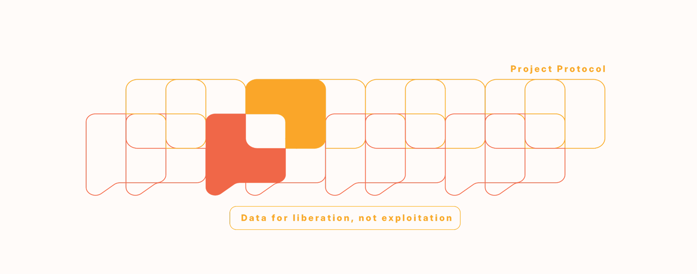
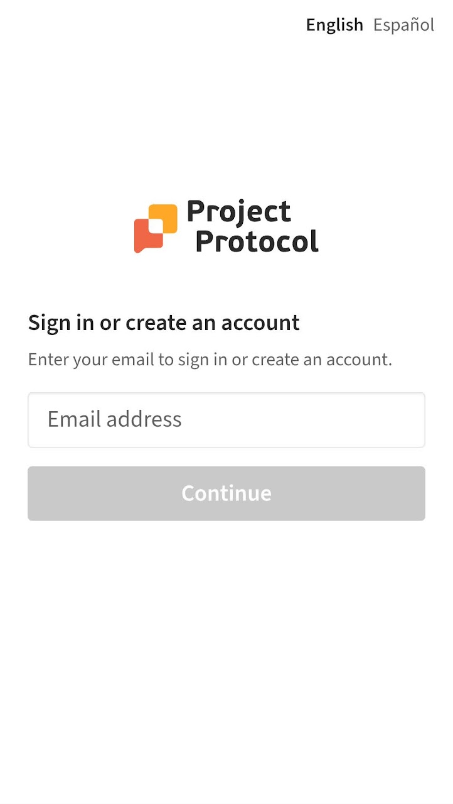
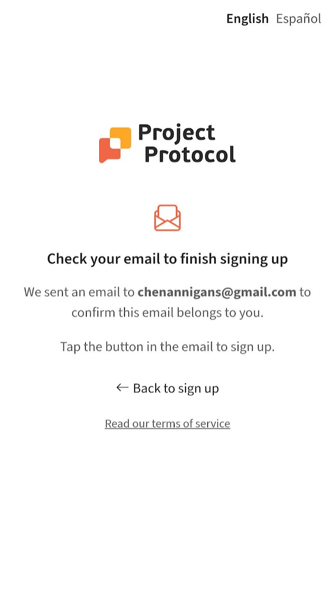
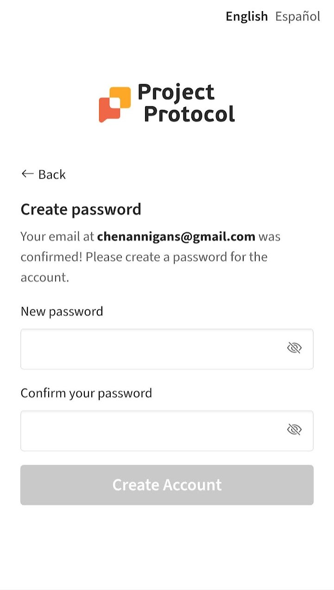
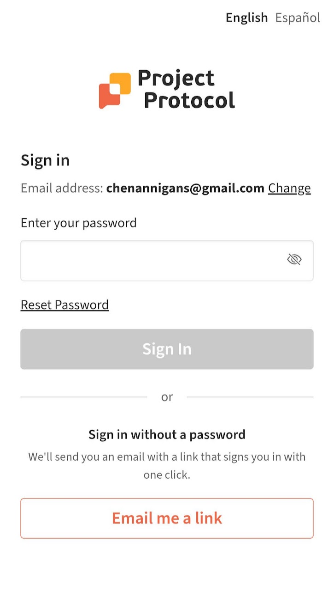

Project Protocol is a non-profit that provides resources and shared community for people in their reentry journeys. While conducting user testing, we noticed some quirks in the sign in process - prompting us to rethink the entire experience and redesign the sign up and login flows with special consideration for accessibility for lower tech users.
Some users had difficulty remembering if they had signed up before, so we decided to consolidate the two. Instead of having a traditional sign and sign up split, we rout the user to the correct one and remove the cognitive load of remembering whether an account was created with that email.
In user testing, some users had already signed up but were having difficult logging in with the same email. Upon investigation, we realized the emails they signed up with had typos which was why they could not be remembered. Previously we had expedited the log in by allowing them to enter the site as soon as they entered an email or password, but without the email verification subsequent logins may become impossible.
Password creation was moved to be after the email confirmation, so that in the event they did not verify the email they would not have to go through the extra step of setting the password.
Because many of our users may not have had access to newer technologies and patterns, we wanted to keep the standard password login for familiarity. However, we also wanted a way for them to log in without resetting their password - thus introducing the one click magic link to expedite the process. Paired with the mandatory email confirmation, this ensures that users have access to their email and makes it a faster way to sign in. We had also explored social login, but did not proceed due to security concerns or potential confusion about the app's purpose.

Sign in and create an account consolidation. Using colloquial language to make it simpler to understand

Email confirmation to ensure that the email exists and that they have access to it

Password creation doesn't happen until after email confirmation so that they don't have to do an extra step before it's possible to proceed with creation

Giving another option to log in without a password. Since the email has been confirmed, we know this access is enabled